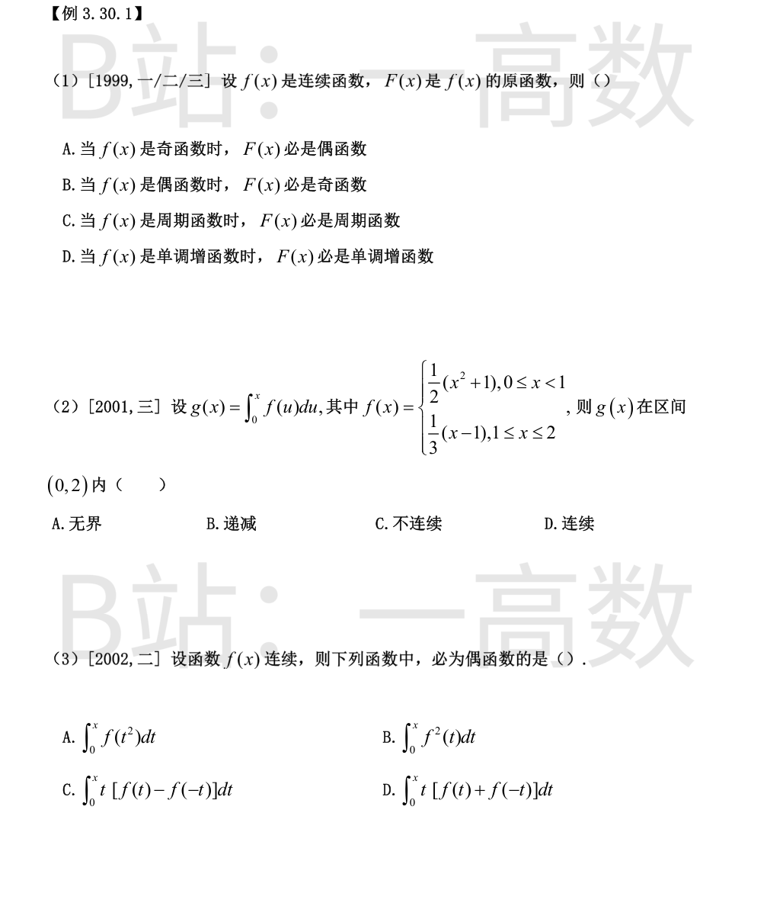
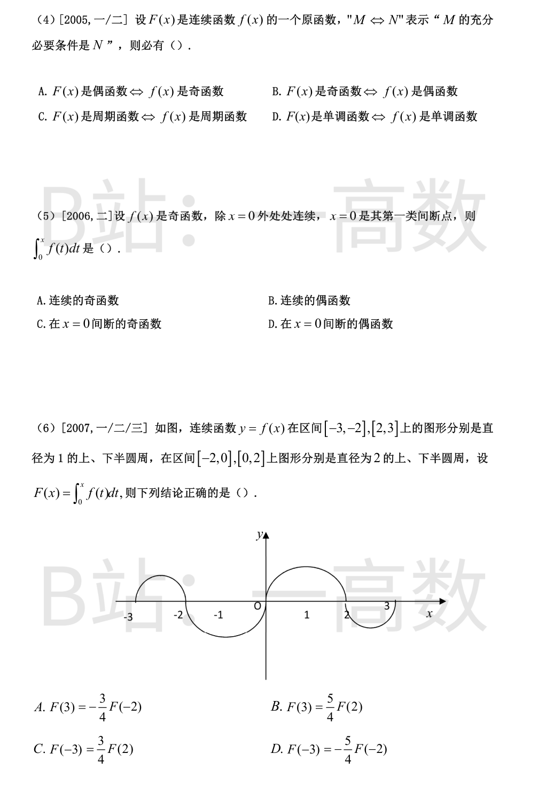
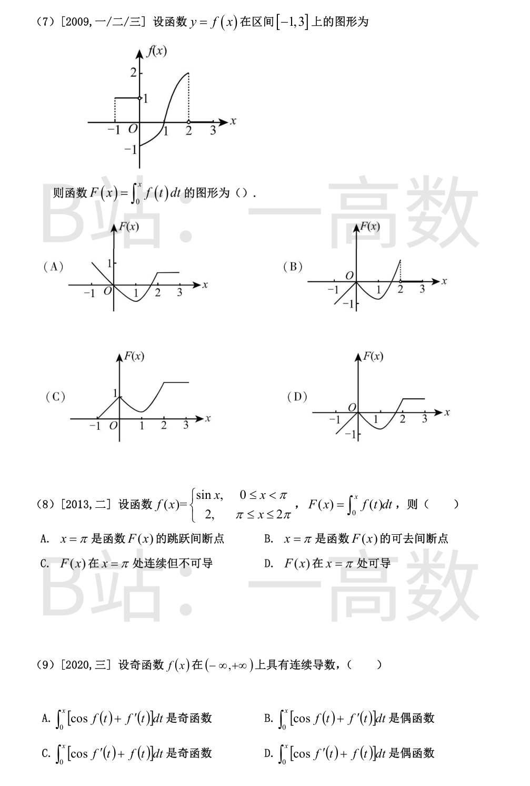
f连续时其任一原函数可写为 F(x)=\int_0^x f(t)dt+C。
$$G(x)=\int_0^x f(t)dt,\quad G(-x)=\int_0^{-x}f(t)dt=-\int_0^{x}f(-u)du=\int_0^x f(u)du=G(x)$$
(A) f为奇函数时G为偶函数，F=G+C仍为偶函数，故F必是偶函数；反之F偶（F(-x)=F(x)）两边求导得-F'(-x)=F'(x)，即f(-x)=-f(x)，f为奇函数。A为充要条件，成立。
(B) f为偶函数时G为奇函数，但F=G+C仅当C=0时才为奇函数，取F=G+1仍是f的原函数却不是奇函数，故B不成立。
(C) f以T为周期时 F(x+T)-F(x)=\int_x^{x+T}f(t)dt=\int_0^T f(t)dt 未必为零（如f=2+\sin x，则F=2x-\cos x不是周期函数），C不成立。
(D) f单调增不能保证F'=f≥0（如f(x)=x-10单调增但在许多点为负，F在相应区间递减），D不成立。
故选A。
f在[0,2]上除x=1处（跳跃：左极限1，右值0）外连续，故f可积，变限积分 g(x)=\int_0^x f(u)du 处处连续，排除C。
$$g(x)=\begin{cases}\dfrac{x}{2}+\dfrac{x^3}{6}, & 0\le x<1,\\[2mm] g(1)+\displaystyle\int_1^x \frac{u-1}{3}du=\frac{2}{3}+\frac{(x-1)^2}{6}, & 1\le x\le 2,\end{cases}$$
g(1^-)=1/2+1/6=2/3=g(1^+)，衔接连续。又在(0,1)∪(1,2)内 g'=f>0，g严格递增，排除B；g在有限区间上连续故有界（g(2)=2/3+1/6=5/6），排除A。选D。
奇函数从0到x的变限积分是偶函数；偶函数从0到x的变限积分是奇函数。逐项看被积函数的奇偶性：
A: f(t²)是偶函数 ⟹ \int_0^x f(t^2)dt 为奇函数；
B: f²(t)奇偶性不确定，其积分不必然为偶；
C: f(t)-f(-t)为奇函数，乘t得偶函数 ⟹ 积分为奇函数；
D: f(t)+f(-t)为偶函数，乘t得奇函数 t[f(t)+f(-t)] ⟹ \int_0^x t[f(t)+f(-t)]dt 为偶函数。
故选D。
(A) f奇 ⟹ 原函数F=\int_0^x f+C为偶函数（见1999题计算）；F偶 ⟹ 对F(-x)=F(x)求导得f(-x)=-f(x)，f奇。故“F偶 ⟺ f奇”成立。
(B) F奇 ⟹ f偶成立（同上求导）；但f偶只能保证 \int_0^x f 为奇函数，任意原函数F=\int_0^x f+C当C≠0时不是奇函数，故f偶⇏F奇，“⟺”不成立。
(C) F周期 ⟹ f=F'周期成立；但f周期时 F(x+T)-F(x)=\int_0^T f(t)dt 未必为零，F不必周期，不成立。
(D) F单调（如F=x³）时f=3x²不单调；f单调时F也不必单调，不成立。
故选A。
f只有第一类间断点x=0，故f在任一有限区间上可积，g(x)=\int_0^x f(t)dt 处处存在；变限积分总是连续的（积分的绝对连续性），故g连续，排除C、D。
奇偶性：
$$g(-x)=\int_0^{-x}f(t)dt=-\int_0^{x}f(-u)du=-\int_0^x[-f(u)]du=g(x)$$
故g为偶函数。选B。
按图形（与原考试图一致：[-3,-2]上半圆r=1/2，[-2,0]下半圆r=1，[0,2]上半圆r=1，[2,3]下半圆r=1/2；题面文字“上、下”当为“下、上”之误）：
$$\int_{-3}^{-2}f=\frac{\pi}{8},\quad \int_{-2}^{0}f=-\frac{\pi}{2},\quad \int_{0}^{2}f=\frac{\pi}{2},\quad \int_{2}^{3}f=-\frac{\pi}{8}$$
于是 F(2)=π/2，F(3)=π/2-π/8=3π/8，F(-2)=-\int_{-2}^0 f=π/2，F(-3)=-\int_{-3}^0 f=-（π/8-π/2)=3π/8。
逐项验证：
A: -(3/4)F(-2)=-3π/8≠F(3)=3π/8，错；
B: (5/4)F(2)=5π/8≠F(3)=3π/8，错；
C: (3/4)F(2)=3π/8=F(-3)，正确；
D: -(5/4)F(-2)=-5π/8≠F(-3)，错。
选C。
① x∈[-1,0]：f≡1，F(x)=\int_0^x dt=x，是过原点、斜率为1的直线段（从(-1,-1)到(0,0)），排除A、C（其左段不过原点/斜率不对）。
② x∈(0,1)：f<0，F'=f<0，F递减；x∈(1,2)：f>0，F递增，F在x=1附近取最小值。B选项在x=0右侧仍递增，不符合，排除B。
③ x∈[2,3]：f≡0，F'=0，F为水平线段。
D的图形：过原点上升直线段→先减后增（极小在x≈1）→[2,3]上水平，全部符合。选D。
f在[0,2π]上除x=π（跳跃间断，左极限sinπ=0，右值2）外连续，故f可积，F(x)=\int_0^x f(t)dt处处连续，排除A、B。
可导性：f的连续点处F'=f。在x=π处
$$F'_-(\pi)=\lim_{x\to\pi^-}\frac{F(x)-F(\pi)}{x-\pi}=\lim_{x\to\pi^-}f(x)=0,\qquad F'_+(\pi)=\lim_{x\to\pi^+}f(x)=2$$
左右导数都存在但不相等，故F在x=π不可导。选C。
f为奇函数 ⟹ 对f(-x)=-f(x)两边求导得f'(-x)=f'(x)，即f'为偶函数；又 cos[f(-t)]=cos[-f(t)]=cos f(t)，即 cos f(t)为偶函数。
于是 cos f(t)+f'(t) 为偶函数；偶函数从0到x的变限积分是奇函数，故
$$\int_0^x[\cos f(t)+f'(t)]dt\ \text{为奇函数}$$
A成立、B不成立。而 cos f'(t)+f(t)=偶+奇，一般既非奇也非偶，其变限积分无确定奇偶性，C、D不成立。选A。
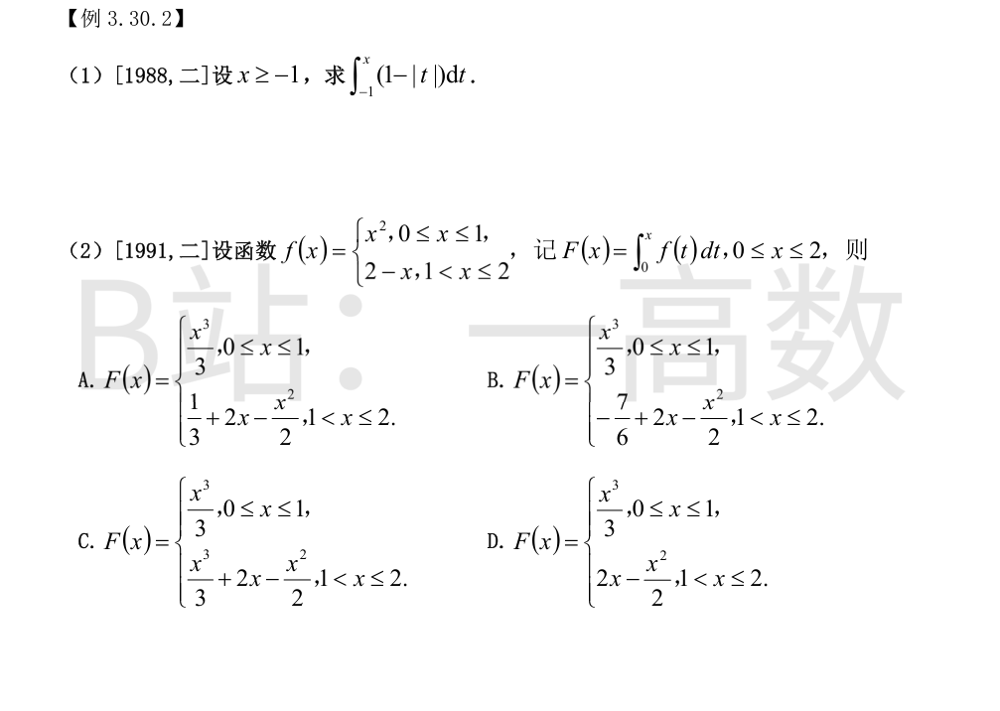
去掉绝对值：1-|t|=1+t（-1≤t≤0），1-t（t>0）。
当-1≤x≤0：
$$\int_{-1}^x(1+t)dt=\Big[t+\frac{t^2}{2}\Big]_{-1}^x=x+\frac{x^2}{2}-\Big(-1+\frac12\Big)=\frac{(x+1)^2}{2}$$
当x>0：
$$\int_{-1}^0(1+t)dt+\int_0^x(1-t)dt=\frac12+\Big[t-\frac{t^2}{2}\Big]_0^x=\frac12+x-\frac{x^2}{2}$$
x=0处两式都等于1/2，衔接连续。
0≤x≤1时：
$$F(x)=\int_0^x t^2dt=\frac{x^3}{3}$$
1<x≤2时：
$$F(x)=\int_0^1 t^2dt+\int_1^x(2-t)dt=\frac13+\Big[2t-\frac{t^2}{2}\Big]_1^x=\frac13+2x-\frac{x^2}{2}-\frac32=2x-\frac{x^2}{2}-\frac76$$
对照选项：B为 x³/3 (0≤x≤1)；-7/6+2x-x²/2 (1<x≤2)，正确（A把第二段常数误为1/3，C、D的系数/结构不对）。选B。
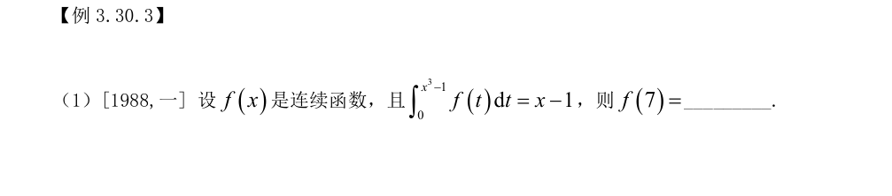
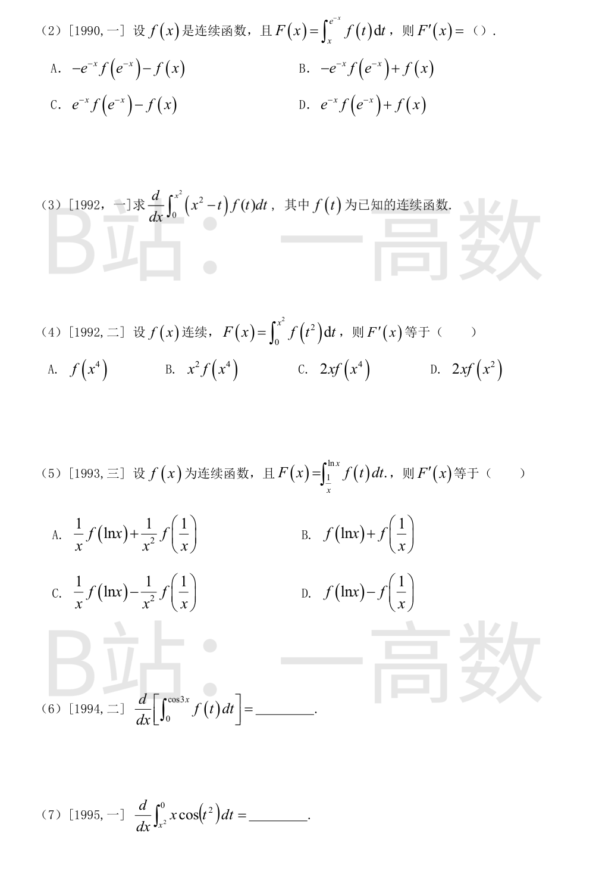
对恒等式 \int_0^{x^3-1}f(t)dt=x-1 两边关于x求导：
$$f(x^3-1)\cdot 3x^2=1$$
令 x³-1=7，即x=2，代入：f(7)=1/(3·2²)=1/12。
上、下限都含x，分别用链式法则：
$$F'(x)=f(e^{-x})\cdot(e^{-x})'-f(x)\cdot 1=-e^{-x}f(e^{-x})-f(x)$$
选A。
被积函数含x，先拆开：
$$I(x)=x^2\int_0^{x^2}f(t)dt-\int_0^{x^2}tf(t)dt$$
分别求导：
$$\frac{d}{dx}\Big[x^2\int_0^{x^2}f\Big]=2x\int_0^{x^2}f(t)dt+x^2\cdot f(x^2)\cdot 2x,\qquad \frac{d}{dx}\int_0^{x^2}tf(t)dt=x^2f(x^2)\cdot 2x$$
含f(x²)的项相消，得 dI/dx = 2x\int_0^{x^2}f(t)dt。
链式法则：
$$F'(x)=f\big((x^2)^2\big)\cdot(x^2)'=2x f(x^4)$$
选C。
上、下限分别求导：
$$F'(x)=f(\ln x)\cdot\frac1x-f\Big(\frac1x\Big)\cdot\Big(-\frac{1}{x^2}\Big)=\frac1x f(\ln x)+\frac{1}{x^2}f\Big(\frac1x\Big)$$
选A。
链式法则：
$$\frac{d}{dx}\int_0^{\cos 3x}f(t)dt=f(\cos 3x)\cdot(\cos 3x)'=f(\cos 3x)\cdot(-3\sin 3x)=-3\sin 3x\, f(\cos 3x)$$
x与积分变量t无关，先提到积分外：\int_{x^2}^0 x\cos(t^2)dt=x\int_{x^2}^0\cos(t^2)dt。用乘积法则并注意下限含x：
$$\frac{d}{dx}=\int_{x^2}^0\cos(t^2)dt+x\cdot\Big[-\cos(x^4)\cdot 2x\Big]=\int_{x^2}^0\cos(t^2)dt-2x^2\cos(x^4)$$
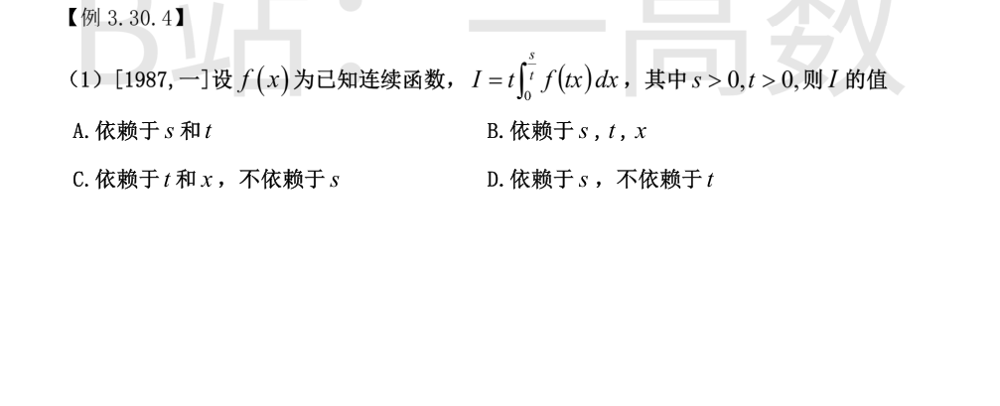
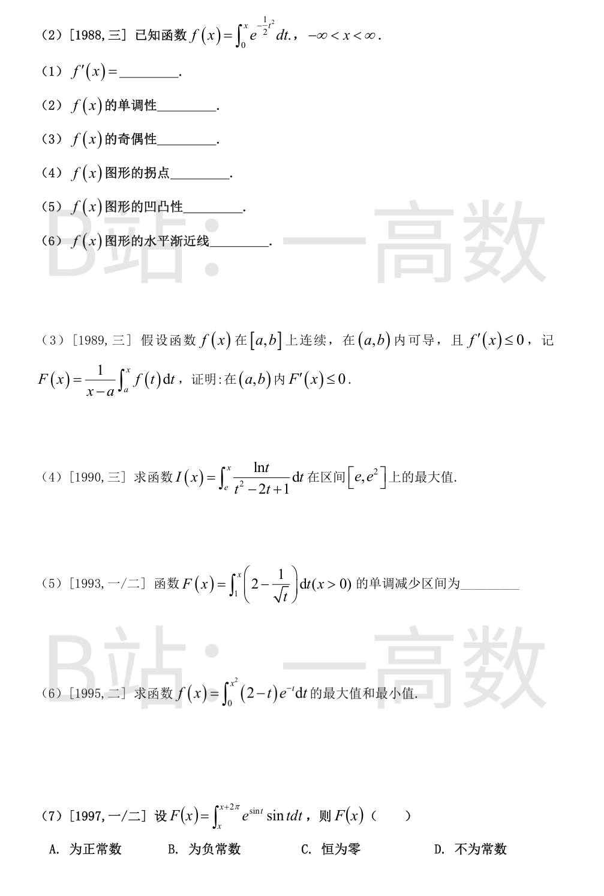
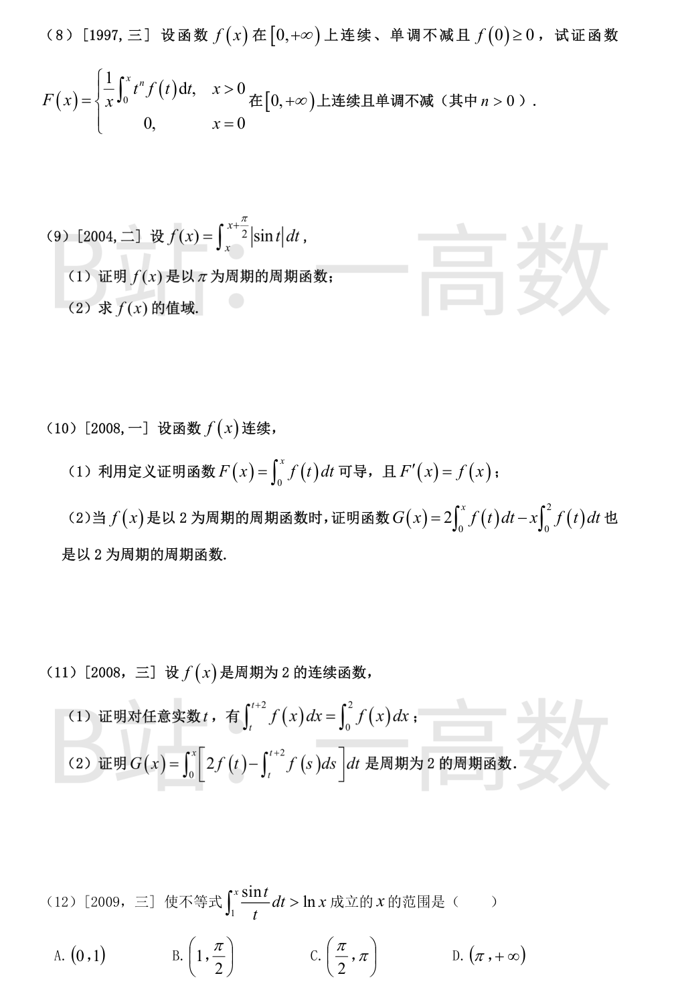
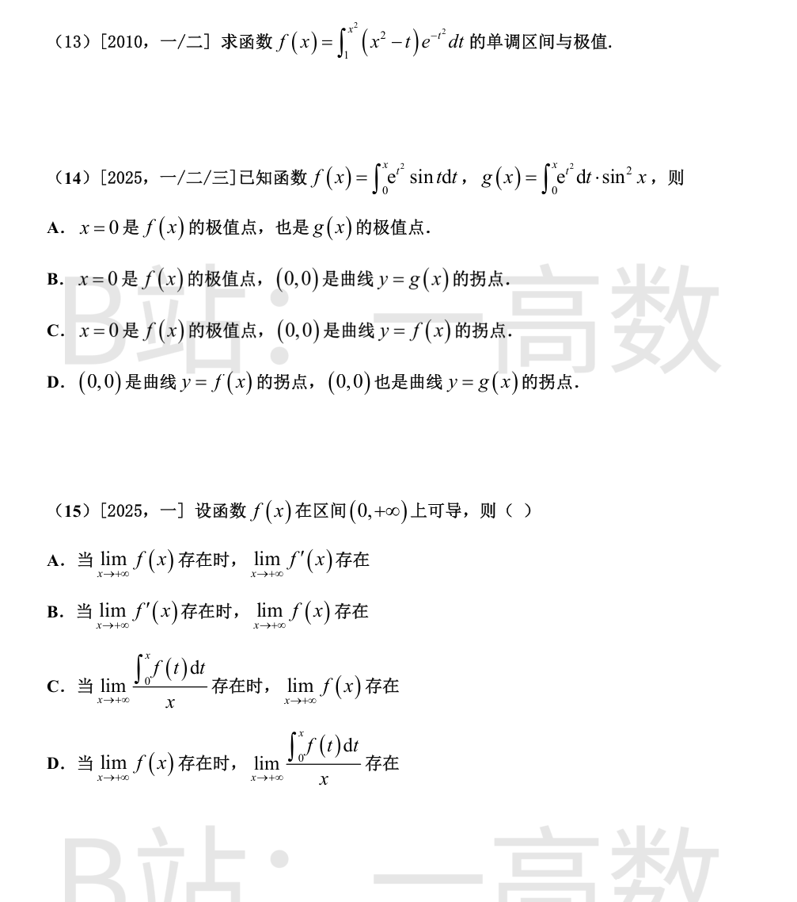
令 u=tx，则 du=t\,dx（t视为常数），x: 0→s/t 对应 u: 0→s：
$$I=t\int_0^{s/t}f(tx)dx=t\cdot\frac1t\int_0^s f(u)du=\int_0^s f(u)du$$
只依赖于s，与t、x无关。选D。
(1) 变限积分求导：f'(x)=e^{-x^2/2}。
(2) f'(x)>0对一切x成立 ⟹ f在(-∞,+∞)严格单调增。
(3) f(-x)=\int_0^{-x}e^{-t^2/2}dt=-\int_0^x e^{-u^2/2}du=-f(x)，故f为奇函数。
(4) f''(x)=-xe^{-x^2/2}，f''(0)=0，且x<0时f''>0、x>0时f''<0，两侧凹凸性相反 ⟹ 拐点为(0,f(0))=(0,0)。
(5) 由f''的符号：(-∞,0)内f''>0，图形是凹的（向下凸）；(0,+∞)内f''<0，图形是凸的（向上凸）。
(6) $\lim_{x\to+\infty}f(x)=\int_0^{+\infty}e^{-t^2/2}dt=\frac{\sqrt{2\pi}}{2}=\sqrt{\frac{\pi}{2}}$，同理 $\lim_{x\to-\infty}f(x)=-\sqrt{\pi/2}$，故有两条水平渐近线 y=±√(2π)/2（约±1.253）。
对x∈(a,b)，由商的求导法则：
$$F'(x)=\frac{f(x)(x-a)-\int_a^x f(t)dt}{(x-a)^2}=\frac{\int_a^x f(x)dt-\int_a^x f(t)dt}{(x-a)^2}=\frac{1}{(x-a)^2}\int_a^x\big[f(x)-f(t)\big]dt$$
因f'(x)≤0，f在[a,b]上单调不减（不增的反向说法：导数非正即单调不增，注意f'(x)≤0⟹f单调不增）——即对a≤t≤x有f(t)≥f(x)，故f(x)-f(t)≤0，被积函数非正，积分号下保持非负区间长度为正，得
$$F'(x)\le 0,\quad x\in(a,b).\qquad\blacksquare$$
I'(x)=\frac{\ln x}{(x-1)^2}>0（x∈[e,e²]），故I单调增，最大值在x=e²处。
计算 I(e²)=\int_e^{e^2}\frac{\ln t}{(t-1)^2}dt。令u=\ln t，dt=e^u du：
$$I=\int_1^2 \frac{u e^u}{(e^u-1)^2}du$$
由 $\big[\frac{1}{e^u-1}\big]'=-\frac{e^u}{(e^u-1)^2}$，分部积分：
$$I=\Big[-\frac{u}{e^u-1}\Big]_1^2+\int_1^2\frac{du}{e^u-1}=\frac{1}{e-1}-\frac{2}{e^2-1}+\int_1^2\frac{du}{e^u-1}$$
又 $\int\frac{du}{e^u-1}=\ln(1-e^{-u})$（求导验证：$\frac{e^{-u}}{1-e^{-u}}=\frac{1}{e^u-1}$），故
$$\int_1^2\frac{du}{e^u-1}=\ln(1-e^{-2})-\ln(1-e^{-1})=\ln\frac{1-e^{-2}}{1-e^{-1}}=\ln\frac{e+1}{e}$$
常数部分 $\frac{1}{e-1}-\frac{2}{e^2-1}=\frac{(e+1)-2}{(e-1)(e+1)}=\frac{1}{e+1}$。
所以最大值 $I(e^2)=\dfrac{1}{e+1}+\ln\Big(1+\dfrac1e\Big)$（数值约0.582）。
$F'(x)=2-\dfrac{1}{\sqrt x}$（x>0）。
$$F'(x)<0\iff \sqrt x<\frac12\iff 0<x<\frac14$$
故单调减少区间为(0, 1/4)。
先求原函数：$\int(2-t)e^{-t}dt=(t-1)e^{-t}+C$（求导验证），故
$$f(x)=\Big[(t-1)e^{-t}\Big]_0^{x^2}=1+(x^2-1)e^{-x^2}$$
求导：$f'(x)=2x(2-x^2)e^{-x^2}$，驻点 x=0, x=±√2。
符号分析（x>0）：(0,√2)内f'>0，f从f(0)=0增至f(√2)=1+e^{-2}；(√2,+∞)内f'<0，f递减趋于极限$\lim_{x\to\infty}f(x)=1$。f为偶函数，x<0侧对称。
于是f(0)=0为最小值（x≠0时f(x)>0：0<x<√2时f>0已证，x>√2时f>1）；f(±√2)=1+e^{-2}≈1.135为最大值（大于两端极限1）。
被积函数 g(t)=e^{\sin t}\sin t 以2π为周期，周期函数在任何长为一个周期的区间上积分相同：令Φ(x)=F(x)，Φ'(x)=g(x+2π)-g(x)=0，故F为常数。
判断符号：
$$F=\int_0^\pi e^{\sin t}\sin t\,dt+\int_\pi^{2\pi}e^{\sin t}\sin t\,dt$$
第二个积分令 t=2π-u：$=\int_0^\pi e^{-\sin u}(-\sin u)du=-\int_0^\pi e^{-\sin u}\sin u\,du$。故
$$F=\int_0^\pi\big(e^{\sin u}-e^{-\sin u}\big)\sin u\,du>0$$
（(0,π)内sin u>0且e^{sin u}>e^{-sin u}）。故F为正常数，选A。
连续性：x>0时f连续 ⟹ F连续。x=0处：因f单调不减且f(0)≥0，对0≤t≤x有0≤tⁿf(t)≤xⁿf(x)，于是
$$0\le F(x)=\frac1x\int_0^x t^nf(t)dt\le\frac1x\cdot x\cdot x^nf(x)=x^nf(x)$$
x→0⁺时xⁿf(x)→0（n>0且f(x)→f(0)），故$\lim_{x\to0^+}F(x)=0=F(0)$，F在x=0右连续。综上F在[0,+∞)连续。
单调性：对x>0，
$$F'(x)=\frac{x\cdot x^nf(x)-\int_0^x t^nf(t)dt}{x^2}=\frac{1}{x^2}\int_0^x\big[x^nf(x)-t^nf(t)\big]dt$$
当0≤t≤x时tⁿ≤xⁿ且f(t)≤f(x)，故tⁿf(t)≤xⁿf(x)，被积函数≥0，从而F'(x)≥0，F在[0,+∞)单调不减。∎
(1) 令t=u+π：
$$f(x+\pi)=\int_{x+\pi}^{x+3\pi/2}|\sin t|dt=\int_x^{x+\pi/2}|\sin(u+\pi)|du=\int_x^{x+\pi/2}|\sin u|du=f(x)$$
故π是f的周期。
(2) f连续且以π为周期，只需在[0,π]上找最值。$f'(x)=|\sin(x+\pi/2)|-|\sin x|=|\cos x|-|\sin x|$。
在[0,π/2]：f'在(0,π/4)为正、(π/4,π/2)为负 ⟹ f(π/4)=∫_{π/4}^{3π/4}sin t dt=√2为极大值；f(0)=∫_0^{π/2}sin t dt=1，f(π/2)=1。
在[π/2,π]：f'=-cos x-sin x，在(π/2,3π/4)为负、(3π/4,π)为正 ⟹ x=3π/4为极小值点：
$$f(3\pi/4)=\int_{3\pi/4}^{\pi}\sin t\,dt+\int_\pi^{5\pi/4}(-\sin t)dt=\Big(1-\frac{\sqrt2}{2}\Big)+\Big(1-\frac{\sqrt2}{2}\Big)=2-\sqrt2$$
比较：最大值√2，最小值2-√2，故f的值域为[2-√2, √2]。
(1) 任取x₀，考察增量
$$\Delta F=F(x_0+\Delta x)-F(x_0)=\int_{x_0}^{x_0+\Delta x}f(t)dt=\int_{x_0}^{x_0+\Delta x}\big[f(x_0)+\varepsilon(t)\big]dt=f(x_0)\Delta x+\int_{x_0}^{x_0+\Delta x}\varepsilon(t)dt$$
其中$\varepsilon(t)=f(t)-f(x_0)\to0$（t→x₀）。由f在x₀连续：∀ε>0，∃δ>0，|t-x₀|<δ时|f(t)-f(x₀)|<ε。当0<|Δx|<δ时
$$\Big|\frac{\Delta F}{\Delta x}-f(x_0)\Big|=\Big|\frac1{\Delta x}\int_{x_0}^{x_0+\Delta x}\varepsilon(t)dt\Big|\le\frac{1}{|\Delta x|}\cdot\varepsilon|\Delta x|=\varepsilon$$
故$\lim_{\Delta x\to0}\frac{F(x_0+\Delta x)-F(x_0)}{\Delta x}=f(x_0)$，即F可导且F'=f。∎
(2) 先证$\int_x^{x+2}f(t)dt=\int_0^2 f(t)dt$：令$h(x)=\int_x^{x+2}f(t)dt$，由(1)（或变限求导）$h'(x)=f(x+2)-f(x)=0$（f以2为周期），故h≡h(0)=∫₀²f。于是
$$G(x+2)-G(x)=2\int_0^{x+2}f\,dt-(x+2)\int_0^2 f\,dt-2\int_0^x f\,dt+x\int_0^2 f\,dt=2\int_x^{x+2}f(t)dt-2\int_0^2 f(t)dt=0$$
故G以2为周期。∎
(1) 令$\Phi(t)=\int_t^{t+2}f(x)dx$，由变限积分求导（f连续）
$$\Phi'(t)=f(t+2)-f(t)=0$$
（f以2为周期），故Φ(t)为常数，取t=0得$\Phi(t)=\Phi(0)=\int_0^2 f(x)dx$。∎
(2) 由(1)，内层积分$\int_t^{t+2}f(s)ds=\int_0^2 f(s)ds=C$为常数，故
$$G(x)=2\int_0^x f(t)dt-Cx$$
$$G(x+2)-G(x)=2\int_x^{x+2}f(t)dt-2C=2C-2C=0$$
（再用(1)的结论），故G以2为周期。∎
令 $g(x)=\displaystyle\int_1^x\frac{\sin t}{t}dt-\ln x$，则 g(1)=0，且
$$g'(x)=\frac{\sin x}{x}-\frac1x=\frac{\sin x-1}{x}$$
当x>0时 sin x-1≤0（仅在孤立点x=π/2+2kπ处等于0），故g在(0,+∞)上严格单调减。
于是：x>1时g(x)<g(1)=0，不等式不成立；0<x<1时g(x)>g(1)=0，不等式成立。故范围为(0,1)，选A。
拆开被积函数中的x：
$$f(x)=x^2\int_1^{x^2}e^{-t^2}dt-\int_1^{x^2}te^{-t^2}dt$$
$$f'(x)=2x\int_1^{x^2}e^{-t^2}dt+x^2\cdot e^{-x^4}\cdot2x-x^2\cdot e^{-x^4}\cdot2x=2x\int_1^{x^2}e^{-t^2}dt$$
记 $J=\int_1^{x^2}e^{-t^2}dt$：x²>1时J>0；x²<1时J<0。符号表：
x<-1：2x<0，J>0 ⟹ f'<0；-1<x<0：2x<0，J<0 ⟹ f'>0；0<x<1：2x>0，J<0 ⟹ f'<0；x>1：2x>0，J>0 ⟹ f'>0。
故单调减少区间为(-∞,-1)和(0,1)；单调增加区间为(-1,0)和(1,+∞)。
极小值：$f(\pm1)=0$（积分上下限相等）。极大值：
$$f(0)=\int_1^0(0-t)e^{-t^2}dt=\int_0^1 te^{-t^2}dt=\Big[-\frac12 e^{-t^2}\Big]_0^1=\frac{1-e^{-1}}{2}$$
（f为偶函数，与符号表一致。）
f的极值：$f'(x)=e^{x^2}\sin x$，在(-π,0)内f'<0、(0,π)内f'>0，x=0为f的极小值点，是极值点。又$f''(x)=2xe^{x^2}\sin x+e^{x^2}\cos x$，$f''(0)=1\ne0$，故(0,0)不是y=f(x)的拐点，排除C、D。
g的极值与拐点：记$A(x)=\int_0^x e^{t^2}dt=x+\frac{x^3}{3}+O(x^5)$，$\sin^2x=x^2-\frac{x^4}{3}+O(x^6)$，则
$$g(x)=A(x)\sin^2x=x^3+O(x^7)$$
（x³项之外x⁵项系数1/3-1/3=0相消）。于是$g''(x)=6x+O(x^5)$在x=0两侧变号，(0,0)是曲线y=g(x)的拐点。又$g'(x)=e^{x^2}\sin^2x+2A(x)\sin x\cos x\approx x^2+2x^2=3x^2>0$（x≠0充分小），x=0不是g的极值点，排除A。
故选B。
A错：反例$f(x)=\frac{\sin x^2}{x}\to0$，但$f'(x)=2\cos x^2-\frac{\sin x^2}{x^2}$当x→+∞无极限。
B错：反例f(x)=x，$\lim f'=1$存在，但$\lim f(x)=+\infty$不存在。
C错：反例f(x)=cos x，$\frac{1}{x}\int_0^x\cos t\,dt=\frac{\sin x}{x}\to0$存在，但lim cos x不存在。
D对：设$\lim_{x\to+\infty}f(x)=L$（常数），写$f(t)=L+\alpha(t)$，$\alpha(t)\to0$（t→+∞），且α在任一有限区间上可积，则
$$\frac{\int_0^x f(t)dt}{x}=L+\frac{1}{x}\int_0^x\alpha(t)dt$$
∀ε>0，存在M，x>M时|α(t)|<ε，于是$\big|\frac1x\int_0^x\alpha\big|\le\frac1x\Big(\int_0^M|\alpha|+\varepsilon(x-M)\Big)\to\varepsilon$（x→∞），再由ε任意得该项→0。故极限存在且等于L。选D。
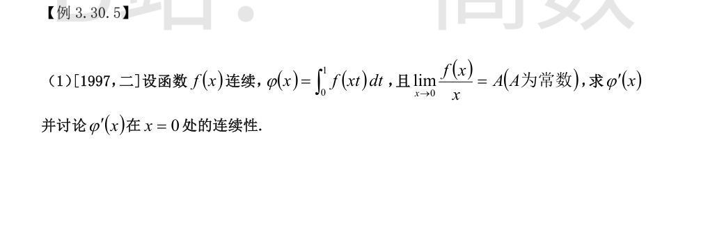
先表达φ：令u=xt（x≠0），$\varphi(x)=\frac1x\int_0^x f(u)du$；x=0时$\varphi(0)=\int_0^1 f(0)dt=f(0)$。
由$\lim_{x\to0}f(x)/x=A$有限知$\lim_{x\to0}f(x)=0$，又f连续，故f(0)=0，$\varphi(0)=0$；且$\lim_{x\to0}\varphi(x)=\lim_{x\to0}\frac{1}{x}\int_0^x f=f(0)=0=\varphi(0)$，φ在0处连续。
x≠0时求导：
$$\varphi'(x)=\frac{xf(x)-\int_0^x f(u)du}{x^2}$$
x=0处按定义：
$$\varphi'(0)=\lim_{x\to0}\frac{\varphi(x)-\varphi(0)}{x}=\lim_{x\to0}\frac{\int_0^x f(u)du}{x^2}\overset{L}{=}\lim_{x\to0}\frac{f(x)}{2x}=\frac{A}{2}$$
连续性：由f(x)/x→A可写f(x)=Ax+o(x)，则$xf(x)=Ax^2+o(x^2)$，$\int_0^x f(u)du=\frac{A}{2}x^2+o(x^2)$，于是
$$\varphi'(x)=\frac{\frac{A}{2}x^2+o(x^2)}{x^2}\to\frac{A}{2}=\varphi'(0)\quad(x\to0)$$
故φ'(x)在x=0处连续。∎